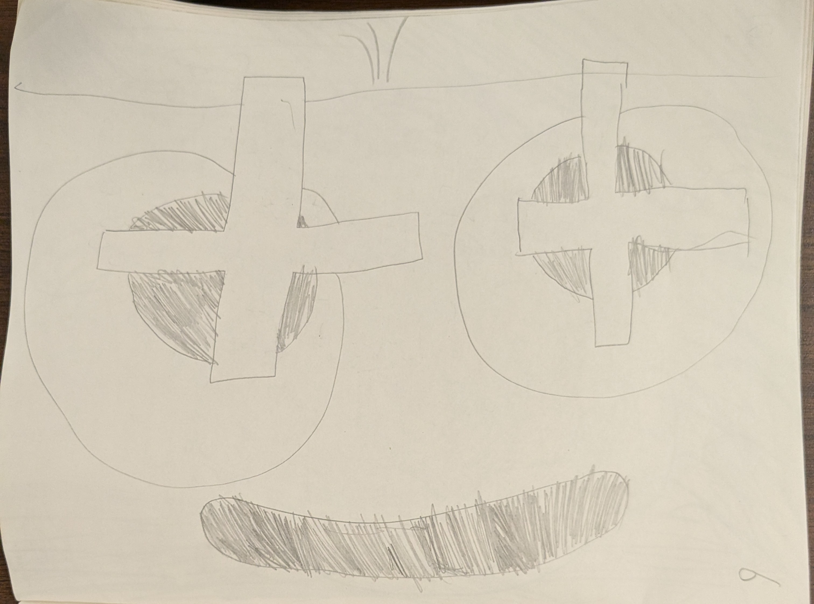
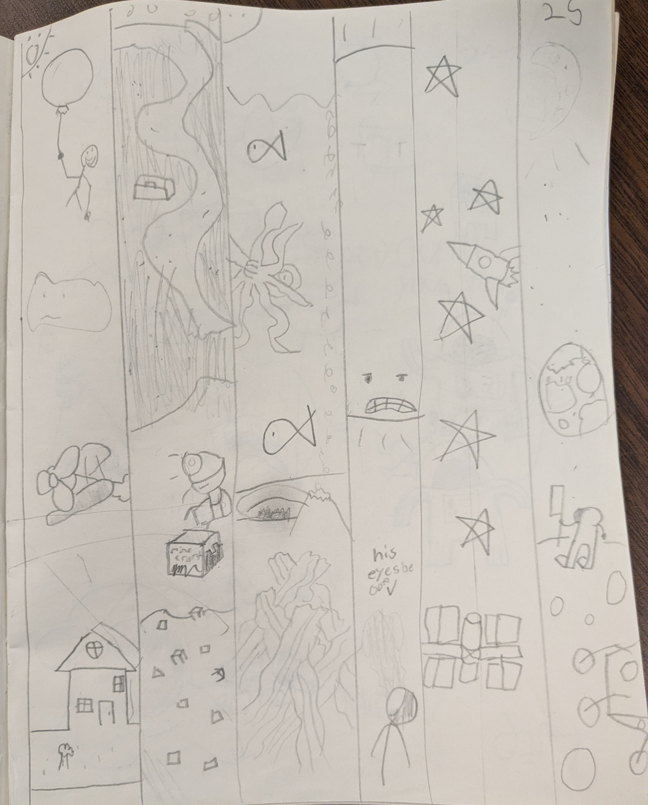

random old drawings i've found from my room. These drawings were from grade 3-4 and show some very early drawings
autism

description:
- not even sure what most of this is
- I reconize a few characters in here and by few i mean two
- I reconize kirbo from terminalmontage (the one colored in pink)
- Above Kirbo is finn the human. Or atleast I think that is finn the human. can't be 100%.
- The rest is just random sketches
rating: 4/10
I mentioned terminalmontage and Finn the human which one is a character and the other is a animator. terminalmontage has made many goofy and humoris cartoons including kirdy and for legal reasons (mainly nintendo) calls him kirbo. which is just kirby drawn in his own style.
here is a link to a video created by terminalmontage
here is a link to Finn the human
the one who made residential schools

description:
- Sausage Man
- simple eyes with a cross over top
- three hairs on top
- simple mouth
rating: 3/10
I lost the first Sausage drawing but he'd always be near residential schools. So then he became someone who created residential schools, atleast in my mind. He has crosses in his eyes. That is meant to symbolize the religion that he brings.
six places

description:
- six different places
- first one is a scene with a man on a baloon, a plane, and a house
- second slide takes place under ground
- third slide is under water
- fourth happens when you look at the sun
- fifth is drawing of the ISS
- last one is on the moon
rating: 5/10
I remember that i enjoyed drawing this
Clouds

description:
- C L O U D S
- there are many clouds in the scene.
- one cloud got hit with a meteor and another is about to get hit by the same rock.
- and one cloud is saying goodbye to the one about to be hit.
rating: 6/10
I love to draw clouds. their simplicity makes it easy to draw, and added faces made them look even better. With the simplicity and the cute faces it made them an easy favorite at the time.